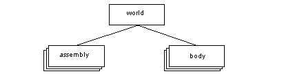
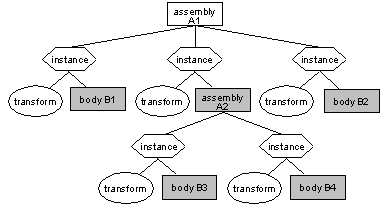
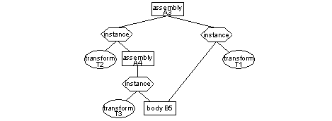
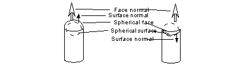

| |
Parasolid KI Programming Concepts |
| <<< | Chapters | Kernel Interface Tokens >>> |
This chapter explains the format of the specifications and the conventions that are used by the Parasolid Kernel Interface. This is the original interface to Parasolid, and its functionality is now almost completely replaced by the PK (Parasolid Kernel) Interface. However, the information contained in this manual will be useful to users maintaining existing applications which call KI routines, and those requiring functionality which has not yet been replaced by PK functions.
For further information see the 'Parasolid Concepts' chapter of the Parasolid Functional Description manual. This information is fundamental to the understanding of Parasolid programming concepts and should therefore be read and understood.
Although PARASOLID is written in 'C', the Kernel Interface has been designed so that it can be called either from 'C' or from suitable implementations of Fortran. To facilitate this compatibility with Fortran, the kernel interface follows these conventions:
|
Note: PARASOLID documentation is written in terms of 'C' conventions - for example, arrays are assumed to start at index 0. |
Each function header consists of:
These components of the header are described in the following sub-sections.
Each routine in the Kernel Interface has a six character name, consisting of upper case letters and digits.
This provides a summary of what each Kernel Interface routine does.
Received arguments pass information from the application program to the Kernel.
The application program must declare a variable of the appropriate type for each argument, and set this to the required value. The address of the variable is then passed to the kernel function for each argument; in 'C', this can be done by use of the address-of operator "&" for scalars, and passing the array pointer itself for an array.
Received arguments are not modified by the Kernel.
Returned arguments pass information from the Kernel to the application program.
The application program must declare variables to correspond to each of the returned arguments in a Kernel routine. The address of a returned argument is passed to the kernel function in the same way as for a received argument.
The contents of returned arguments will always be set after a function call even if an error has been detected by the Kernel routine. For a non-zero ifail they will be set to the default values.
The last returned argument for each Kernel routine is an error code ('ifail'). This error code will be returned as zero if the call was successful, but will have a non-zero value if some error was detected. See later section on error returns for further details.
Both received and returned arguments are declared in the form: typedef name followed by, variable name followed by, comment
The typedef name may be enclosed by or may contain angle brackets < >. Their significance is explained in the section 'meaning of Angle Brackets'.
The first form identifies a scalar variable. The asterisk indicates that the function requires the address of an appropriate variable as its argument.
The second form identifies a variable which is an array. The calling program must supply an array which is large enough to hold the received or returned argument. The array dimension is normally given by the expression within the square brackets; in other cases, the array dimension is given in the detailed description of the function. Note that arrays are always one dimensional and that all documentation uses the 'C' convention that array subscripts start from zero.
When a routine requires options (iopts) or properties (props) and option data (optdta) or property data (pdata) to be entered, it is imperative that both argument arrays are of equal length. For example, the routine for creating a B-curve by splining (CRSPPC) requires properties and their data, therefore if the properties of the curve were declared as:
the data associated with these two properties would be declared as:
The list of specific errors gives a list of possible error code returns for that particular Kernel Interface routine. Note that other error code returns are also possible; for example if an argument does not conform to the specified typedef. See the later section on error returns for details.
This explains what the Kernel routine does in more detail. Where reference is made to particular routine arguments, their names are delimited by single quotation marks ' '. If a routine makes reference to other Kernel Interface routine names or to token values, these use upper case letters or digits and are six characters long.
As mentioned previously, arguments to kernel interface functions are commonly defined in terms of special typedefs. The purpose of such special typedefs is to specify more clearly what the argument is and what values it may have.
If a received argument is declared in the routine header in terms of a particular typedef, the Kernel can apply run-time argument checking if this option has been selected by the SEINTP routine, option SLIPCH. In the case of an array argument, such typedef checks will be applied to each element of the array.
A summary of the different typedefs is listed in the appendix C. Each entry includes the error codes which can be returned by the Kernel if an argument fails the check for that typedef.
The special typedefs can be sub-divided into a number of different classes depending on their prefix (KI_int, KI_dbl, KI_chr, KI_cod, KI_vec, KI_tag, KI_tag_list). These classes are described in the succeeding sub-sections.
The special typedefs which are in the form KI_int_... denote that the application program must supply a variable which is an integer and that the initial value of a received variable must be in a particular range.
e.g. If a received variable is declared as a pointer of typedef KI_int_order, this denotes that an integer must be supplied which represents the order of a B-curve or B-surface (which must be >= 2).
The errors listed in the appendix A show that a routine which uses this typedef can return a 'typedef error' of 'KI_order_lt_2' in addition to any of the specific errors listed in the header.
The special typedefs which are in the form KI_dbl_... denote that the application program must supply a variable which is a double and that the initial value of a received variable must be in a particular range.
e.g. If a received variable is declared as a pointer of typedef KI_dbl_sc_fact, this denotes that a double must be supplied which represents the scaling factor for a transformation (which must be > 0.0).
The errors listed in the appendix A show that a routine which uses this typedef can return a 'typedef error' of 'KI_sc_factor_le_0' in addition to any of the specific errors listed in the header
The special typedefs which are in the form KI_chr_... denote that the application program must supply a variable which is a char and that the initial value of a received variable must be in a particular range.
e.g. If a received variable is declared as a pointer of typedef KI_chr_filename, this denotes that a single character or all characters in an array must be suitable for inclusion in a filename.
The special typedefs which are in the form KI_cod_... denote that the application program must supply a variable which is an integer and that the initial value of a received variable must be set to one of a limited number of code or 'token' values.
e.g. If a received variable is declared as a pointer of typedef KI_cod_tyge this denotes that the variable of that type must be set to one of the token values represented by mnemonics TYGEPT, TYGECU, TYGESU, TYGETF.
The token mnemonics and corresponding values denoted by each of the KI_cod_.... typedefs are listed in appendix C.
The special typedefs which are in the form KI_vec_... denote that the application program must supply an array of type double of which the dimensioned length is a multiple of 3.
The special typedefs which are in the form KI_tag_... denote that the application program must supply an integer variable to hold a tag. If the argument is a received variable, it must contain a valid tag and the tag must be of the appropriate type.
Tag typedefs are either specific (such as KI_tag_body) or general (such as KI_tag_geometry).
The most general class of tag typedef is KI_tag. This allows all forms of tag (including deleted tags) and does not involve any validity checks.
If the typedef names are in the form KI_tag_list..., this implies that the argument is the tag of a list of integers, doubles, vectors, characters or is the tag of a list of tags. The contents of the list are implied by the last part of the typedef name (which replaces the ... shown above). This part of the name is called the underlying type of the list, e.g.:
KI_tag_list_int implies a tag which refers to a list of integers
KI_tag_list_face implies a tag which refers to a list of faces
KI_tag_list_geometry implies a tag which refers to a list of geometric entities (curves, surfaces, points, transformations)
The Kernel will apply the same checks to each entry in the list as it would if the variable had been declared by the underlying typedef.
If the routine returns an error code and the error has occurred as a result of one of the entries in a list being in error, the entry number of this item can be returned by the 'output last error' function OULERR. Note that the entry numbers start from one (unlike array subscripts).
In most cases, Kernel routines do not allow empty lists to be passed as received arguments. Exceptions are the list-handling routines PTINLI, PTRLLI, PTTGLI, SRCHIL, SRCHRL, and SRCHTG.
If a routine returns a list, the application program must supply an integer variable into which the Kernel will write the tag of the new list.
Where received arguments are specified as lists of tags, the Kernel will accept the tag of an entity (which is acceptable to the underlying typedef) as an alternative to passing the tag of a list which contains that entity.
e.g. if a received argument is described by typedef KI_tag_list_body, this implies that it will also accept single tags of typedef KI_tag_body.
This is for the convenience of the application programmer as it avoids the need to create and to delete lists of tags containing single items.
|
Note: This does not apply when the received arguments are specified as a list of lists where it is not valid to shed a level of the identifying direction |
If a typedef name is enclosed by angle brackets, this denotes that the received argument is allowed to contain a particular 'default' value associated with the typedef (where this is applicable). The interpretation of the default value depends upon the category of typedef and upon whether a particular typedef makes use of it. Typedefs of the form KI_chr_..., KI_cod_..., and the 'underlying' types (int, double and char) do not use the default value mechanism, so are never enclosed by angle brackets. The sub-sections which follow describe the interpretation of the angle brackets for the classes of typedefs for which they are used.
If the typedef is of the form KI_int_..., KI_dbl_... or KI_vec_..., the default value is integer zero, floating point zero or the zero vector.
If a routine argument is declared with the typedef enclosed by angle brackets, this specifies that the value of the associated variable can be zero.
If no angle brackets are given, the question as to whether or not zero values are allowed, depends upon the way in which the range of values allowed by the typedef have been defined, e.g. if an argument is declared as:
KI_dbl_distance *height, the height must be > 0.0 but for
<KI_dbl_distance> *height, the height must be >= 0.0
The question of whether or not a typedef makes a special case of default values can usually be resolved by examining the error codes associated with a particular typedef, which are listed in appendix A.
If a typedef does not make a special case of the default value, the declaration will not contain angle brackets:
e.g. if an argument is declared as:
KI_vec_position *origin, the zero vector is not a special case, but for
KI_vec_normal *direct, the zero vector is specifically excluded
If the typedef is of the form KI_tag_..., the default value is the null entity token NULTAG which is mnemonic, and its value is defined in Appendix B, e.g.:
KI_tag_body *entity, the variable must contain the tag of a body
<KI_tag_body> *entity, the variable can contain the tag of a body or can be set to the null tag (NULTAG)
If the typedef is of the form KI_tag_list... and the underlying type of the list is of one of the types of tags, the function headers can specify that the list can contain null tags by enclosing the name of the underlying type with further angle brackets. Examples:
KI_tag_list_<body> *entities, specifies a list which can contain body tags or null tags but which cannot be the null tag itself (i.e. the list must be valid)
<KI_tag_list_<body>> *entities specifies a list which can contain bodies or null tags, or which can itself be the null tag (i.e. the list need not exist)
|
Note: Both examples will also allow a single body tag to be given instead of a list of bodies by the concession that allows one tag of the underlying type to be given instead of a list |
Each Kernel routines returns an error code in its list of returned arguments. By convention, this variable is named 'ifail' and is the last argument of the routine. Error codes are defined as mnemonic codes (listed in appendix B); where possible, application programs should use these error code mnemonics instead of the associated numeric values.
The Kernel routine OULERR can be called to get further information (e.g. the name of the erroneous argument) for the most recent kernel error; this may help the application programmer to identify the problem.
The error codes fall into five categories:
The first category implies that the operation was successful.
The other four categories imply that the operation was not successful and that the routine has taken no further action (other than setting the values of returned arguments to default values). These four categories are described in the sub-sections which follow.
Type validation error codes are not listed explicitly in the routine header but can be derived by cross referencing the typedef names in the header with the error codes which are associated with each typedef name. The list of typedef names appears in appendix C.
An example of this type of error is where the header describes an argument as (a pointer to) a body tag. If the Kernel routine detects that it has been passed an inappropriate tag, it will return an error code which belongs to the type validation class of errors. In general, these codes are not listed in the list of specific errors which apply to a function.
The codes for exception conditions are not listed explicitly in the function header since they apply to almost every type of function and can occur at any time. An example of this type of error is if the operating system is unable to supply sufficient virtual memory.
The exception error condition codes are:
Explanation of each code is given in Appendix B, "Kernel Interface Error Codes".
When an assembly is read using GETMOD, the sub-parts of the assembly are not received immediately. However, if some subsequent Kernel routine requires one of the sub-parts to be in memory, this sub-part will be received implicitly as a side-effect of the operation.
For example, suppose we receive an assembly, and then call the MASSPR function to determine its center of gravity. In order to calculate the center of gravity, the MASSPR function must implicitly receive all the sub-parts of the assembly. Now suppose further that there is a problem in receiving one of the sub-parts; this will result in an "implicit-receive" error being returned by MASSPR. A similar situation can occur with many other Kernel routines.
Because they can occur in many functions, the implicit-receive error codes are not documented in the routine headers. The possible error codes are:
See GETMOD or Appendix B, "Kernel Interface Error Codes", for an explanation of these error codes.
Specific errors are those which are specific to a particular Kernel routine; the codes for such errors are listed in the routine header.
The following sections introduce Parasolid concepts that are specific to the use of the KI interface routines.
For further information on the concepts which apply also (or only) to the PK Interface see the 'Parasolid Concepts' chapter in the Parasolid Functional Description manual.
The world has a tag value of 1, and it is a unique entry with its own type. It contains all parts (bodies and assemblies) in the session. As the world is unique it has no subtypes.
Figure 1-1 The world, assemblies and bodies
Lists provide a general method of structuring data, and are required or returned by many KI routines. They are typically used without an owner, but can be attach to a body (although they cannot be archived with the body). There are three types of list:
The word part is used to mean "assembly or body".
The 'state' of a part depends on whether and how, it has been archived during a session. You can find out the state of a part in the session using OUPART. The possible states are:
SESTPA can be used to change the state of a part.
Archiving is the process of saving parts which are in Parasolid's internal memory to external storage. The nature of this storage depends on your application's Frustrum.
Stored, modified and unloaded parts all have keys, which you can find by calling OUPART. New and anonymous parts do not have a key associated with them - they are said to be unkeyed.
The key is a text string which you will use to locate the archive data for that part. Your Frustrum uses the key either as a file-name, or an index into your application's database. The implementation of the key depends on the Frustrum. Parasolid remembers a part's key, during a session, but to retrieve the part in a later session you must also save the key somewhere.
It is possible to have several parts with the same key. This can occur if you save a part, change it and then retrieve it again from archive (this could happen several times). It can also occur if you retrieve an assembly which had components saved with it, when some of them are already in the modeler's memory.
Because of the limitations on SAVMOD and GETMOD, only one of the parts in memory with a particular key can be in 'stored' state. You can find a list of tags of parts which have the same key by calling the KI routine IDKYPA.
You call SAVMOD with the tag of a part and a key. You can only save 'new' or 'modified' parts. A 'part' is a body or an assembly - you cannot save subordinate entities, like edges and surfaces etc., on their own. Saving (or transmitting) a part changes its state to 'stored'.
When you archive a part, the following items are saved:
See the following 'Assemblies' section for details of the extra information which is saved with assemblies.
Once you have saved a part, you can unload it from memory using UNLDPA, which frees Parasolid's internal storage space for other models. The tag of the part remains valid, and if you need to use the part again later in the session, it will be reloaded automatically.
When you unload a part, you can still use the part's tag, key and box. Note that if the part is leaded again, the subordinate entities will probably not have the same tags as the ones they had before the part was unloaded.
You retrieve a part from archive using GETMOD. Given the key of a part, this function obtains the archive data via the Frustrum, and re-loads the part into Parasolid's memory.
When you save a part, the data output through the Frustrum can be in one of two formats: text or binary. (Text format files are guaranteed to be portable between different machines; binary files can be in neutral (portable) or in machine speak format). There is an 'interface parameter' to control which of these formats the kernel is expecting to use. This parameter is identified to SEINTP by the token SLIPBT. If the format of the file you are trying to receive does not match that expected by the kernel, GETMOD will fail.
You can retrieve any part for which you have a key. It is your system's responsibility to ensure that Parasolid can find the archive data for the part. This is mostly dependent on the Frustrum. If the key cannot be found by the Frustrum (for instance because your implementation simply treats keys as filenames and has no information on which directory to look in) then GETMOD will fail.
GETMOD retrieves parts which were saved in a previous session and are as yet unknown in the current session, and it also works on 'unloaded' and 'modified' parts. The state of a part after you have retrieved it is 'stored'. If the part was 'modified' then the part is received as normal, resulting in two parts in memory which have the same key; one of which has state 'stored', and the other 'modified'. If you try to retrieve (or receive) a part which is already in memory then GETMOD will fail with the error "Part already loaded", because the part is, by definition, already in internal memory.
When you are retrieving a part you must take care that the size of its user fields is the same as that set for your current session by STAMOD. If it is not, and you do not need to know the contents of the user field, you can prevent GETMOD from trying to read it by calling the routine SEINTP (set interface parameter) with the token SLIPUF, and value 0. This action will cause GETMOD to ignore the user fields which were saved with the part, create user fields of the length required by the current session, and set them to zero.
Assemblies allow the representation of collections of bodies as part of a single model. They can contain other assemblies as well as solids, generating a tree-like structure.
Figure 1-2 The instanced components of an assembly
An instance is a pointer identifying a part, together with a definition of its location in the assembly (a transformation). A part is said to be instanced in an assembly if the assembly contains an instance somewhere which points to the part.
It is possible to instance the same body (or assembly) several times in an assembly, and because each new instance only points to the part rather than copying it, a lot of internal (and disk) space is saved.
The components or sub-parts of an assembly are all the parts which are instanced anywhere in the assembly. All the shaded parts (both bodies and assemblies) of Figure 1-2 are components of assembly A1. Similarly, the components of A2 are bodies B3 and B4.
The occurrence of a part within an assembly depends upon two things, which instance it belongs to and at what level. For example:
Figure 1-3 Two occurrences of one body in an assembly
In Figure 1-3there are two occurrences of body B5 in assembly A3. One is at the "top level" where it is instanced in its own right with a transformation T1. The second is as part of the top level instance of assembly A4. In this second occurrence, B5 is transformed twice: once because of the transform with it in A4 (T3) and then again by the transformation of A4 in A3 (T2).
Parasolid does not keep track of occurrences of parts in an assembly, you have to locate them yourself. This means that when performing operations on assemblies, such as drawing them, or allowing the users of your application to pick entities from them, if you want to be aware of which occurrences are which, you must program accordingly.
CREASS creates an (empty) assembly, to which instances can be added.
CREINS creates instances using the tag of the assembly, the tag of the part and the transformation (if any) to be applied to the part.
If you do not supply a transformation when you create an instance, it will not have a transformation attached to it, and the modeler will act as if the identity transformation is attached. Transformations can be changed using APPTRA.
SAVMOD will archive an assembly and its components in one file (depending on their part states - e.g. 'stored' parts will not be archived again, the assembly file will contain a pointer to the stored part).
Alternatively, if SAVMOD is first used to archive each component of an assembly, the assembly "file" will simply contain pointers to the other files.
GETMOD will receive the archived assembly. The modeler works hard to maintain the consistency of the data structure in its internal memory, with respect to the state of all the parts. When the part you are receiving is an assembly, Parasolid also tries to link it up to any components which were saved separately from it. The success of these attempts depends on whether there are parts in memory with the same keys as parts you are trying to receive or instance, and if so, the state of those parts.
You can create an image of an assembly by passing the tag of the assembly to any of the RRxxxx rendering routines. The data will be output through the GO in the usual way. Each segment will have its own body tag, but they will all have the same occurrence number. This refers to the occurrence of the assembly in the entity list passed to the RR routine, and not to assembly structure.
However, this will not enable you to relate any particular occurrence of a part in the assembly to its image, because there will be no links between the data output through the GO and the instances of parts in the assembly.
If you want to be able to identify a particular occurrence of an entity in the picture, then you should draw each component part of the assembly separately. Then when an entity comes out through the GO, as well as having the tag of the body, you can find out which instance it is by linking it back to the entity in the drawing list.
When a KI assembly is loaded into an application which uses only PK functions, PK_ASSEMBLY_ask_parts can be used to get the tags of its bodies (sub-assemblies need to be enquired recursively until all bodies are obtained). The bodies can then be archived as multiple bodies in a single part file, using PK_PART_transmit.
Many other PK functions which operate on a 'part' will accept either a body or an assembly as the input entity.
There are some differences between the PK and KI interfaces, in the way that senses are considered. The following is an explanation of the way senses have to be considered when using KI routines, where they differ from the PK concepts.
Every surface has an explicit sense flag. This indicates whether the orientation of the surface entity is the same as the natural orientation of the surface:
If a surface is negated by calling NEGENT, the surface normal is reversed. Since the orientation of a surface depends on the surface sense this has the effect of reversing the surface normal. For example, the orientation of simply curved surfaces would then point away from the concave side of the surface. The sense of a surface is found by calling OUTSUR.
Every face has a reverse flag associated with it which indicates whether the face normal is in the same direction as the surface normal, where the surface normal means the orientation of the surface taking into account the surface sense flag. The surface can be found by calling IDSOFF. If the face reverse flag is true the face normal is anti-parallel to the surface normal, and if the reverse flag is false the face normal is parallel to the surface normal.
To find the normal of a face first get the natural surface normal; then apply the surface sense; and finally apply the face reverse flag.
Several KI routines refer to the 'face sense', therefore it is necessary to make the distinction between the face sense and the face reverse flag. In general terms, the face sense means the opposite of the face reverse flag, e.g. if the face sense is true then the face normal will be in the same direction as the surface normal, and if the face sense is false the face normal will be in the opposite direction to the surface normal.
The sense of a face can only be altered through the KI when a surface is attached to the face using ATTGEO or ATGETO, or when a face is tweaked to a surface using TWSUFA.
For consistency, the face sense must be correct. Therefore if the face sense is KI_true, the orientation of a surface must be in the same direction as the face normal, i.e. point outwards from the material of the body. If this is not the case, the face will either be concave instead of convex (or vice versa) or the face will be invalid and will fail the checks imposed by CHCKEN.
The following example shows a cylinder with a spherical face at one end. The surface normals of the spherical surface point away from the convex side of the surface.
Figure 1-4 When the face sense is KI_true, the face is convex; when it is KI_false the face is concave
Curves directions and their relationship to other entities are considered differently in the KI, although the above conventions on loops, fins, edges and curves in the PK are also relevant.
Figure 1-5 Fin and edge direction
Figure 1-6 The relationship between the direction of the curve and its owning edge/fin
There is a difference in the parameterisation of curves (in particular trimmed curves) between the KI and the PK.
Consider a simple example of an infinite curve (i.e. parameterized between -infinity and infinity). Based on this curve is a trimmed curve which through the KI is seen as being parameterized between 0 and 10 (this could have been created by CRTRCU for instance). Through the PK, this curve is also seen as being parameterized between 0 and 10.
Now consider a trimmed curve based on the original curve and parameterized between 5 and 10. Through the PK, this curve is seen as being parameterized between 0 and 5. This convention of having a trimmed curve parameterized between 0 and X was introduced at the PK for STEP compliance.
Now take this trimmed curve from (2) and negate it using NEGENT:
Simultaneous use of ENPOPC and PK_CURVE_eval is not recommended. The use of PK_CURVE_eval only is recommended.
| <<< | Chapters | Kernel Interface Tokens >>> |